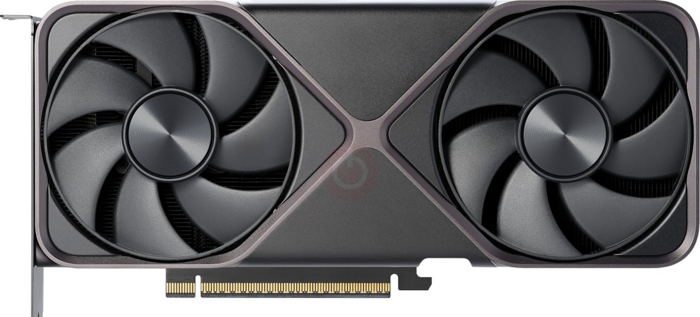

AMD Ryzen 7 7800X3D, RTX 5070 12GB, 1TB SSD, 32GB RAM
Procesor - AMD Ryzen 7 7800X3D
Frekvence: 4.2 GHz
Max Frekvence: 5 GHz
Počet Jader: 8
Počet Vláken: 16
L1 Casche: 64 KB (1 jádro)
L2 Casche: 1 MB (1 jádro)
L3 Casche: 96 MB
TDP: 120 W
Max TDP: 162 W
Socket: AM5
Výrobní Technologie: 5 nm
Grafická Karta - RTX 5070 12GB
Počet Stream Procesorů: 6144x
Výrobní Technologie: 5nm
Architektura Čipu: Blackwell 2.0
Grafický Procesor: GB205
Velikost VRAM: 12GB
Typ Paměti: GDDR7
Šířka Sběrnice: 256-Bit
Frekvence Jádra: 2325 MHz
Frekvence Paměti: 1750 MHz (28Gbps)
TDP: 250 W
